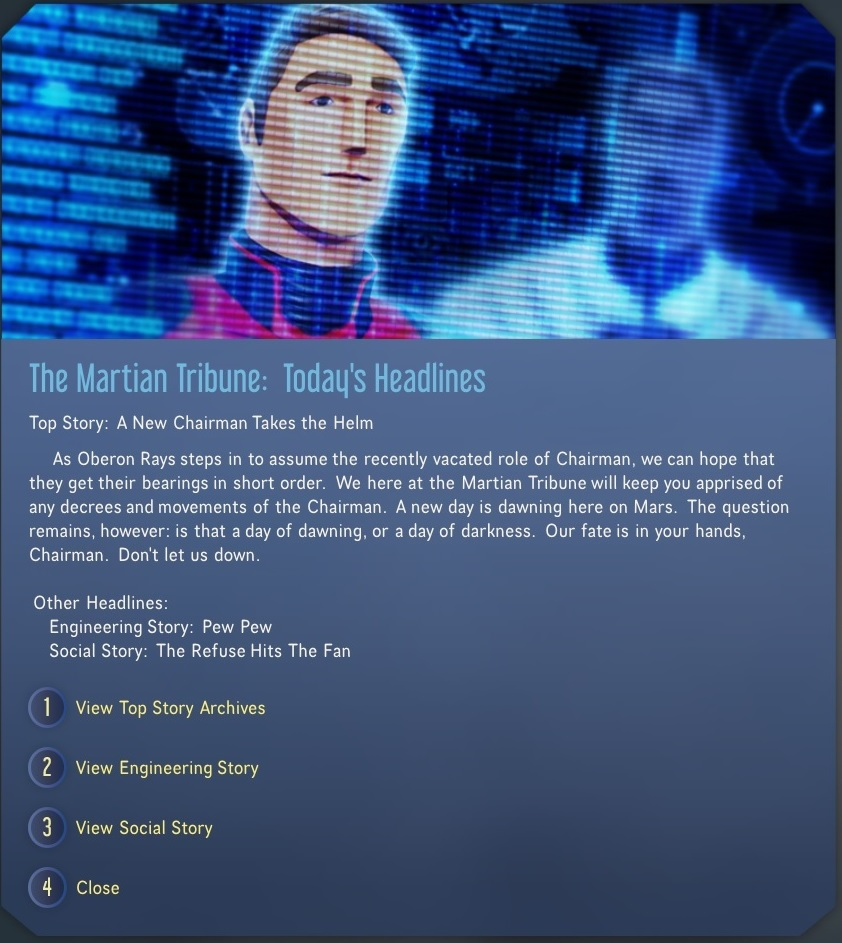

I'm Chaz, known across the web as CheTranqui1. I began this journey into Software Development informally in 2017 with the goal of improving player's experience in Heroes of the Storm and have since discovered that this remains my primary driver: I strive to improve the end-user experience through thoughtful feature design and creating meaningful interaction.
Noteworthy Projects
The following projects were substantial in my learning along the way to becoming a Software Developer:
The Martian Tribune

In 2018
Haemimont Games
released a game called Surviving Mars. I wanted the colonists to have a more personal feel, so I trusted that I learned enough in making the drafting minigame and made my first ever mod: The Martian Tribune. It presents stories that my team and I wrote to the player every three in-game days and each story was seleted dynamically based upon the current state of the game.
What I Learned
As Project Lead I recruited a second author and later brought a professional programmer on board to refactor my original code (what is currently on GitHub is her refactoring). This was an awesome experience in just how challenging, rewarding, and diverse the development experience is when seeing a project through from start to finish.
This was my first ever project back in 2017. I wanted to learn how to draft better and decided to create a minigame that would let me draft against professional teams and critique my choices. Most people start off with 'Hello World', I started off with C#, Unity, and how to import data from a JSON file. It was a rough couple of months, but I'm proud of the not-quite-finished result.
In 2018 I revisited a MUD that I enjoyed during my teenage years called Dragonrealms. To make several travel quicker and simpler I made the script that I am most proud of: "Go Anywhere". It uses pivot points connected via major corridors, and moves the character using a destination variable (%D) where %Dto%D results in arrival. It has around 300 starting and ending locations and starts with a simple ".go place". It's also highly communicative with an in-game menu and directions upon arrival. It was a fun project to plan and implement.
In 2018 I was deeply engaged in a newer game called Empires & Puzzles. Since it didn't have much of a wiki (90 pages, all basic hero cards). Over the next 4 months I created approximately 350 pages, organizing the game content into small logical pieces and connecting them by links in the wiki, building the backbone of what is available today. When I started it was receiving less than 1000 views per month. In January of 2021 it had over 600,000 views and my Hero Information page received over 14,000.